本章主要内容
上一章中我们寻找原子操作和存储器模式的底层细节。在这一章中，我们先不探讨底层细节（尽管第7章中我们需要用到它们）而是考虑数据结构。
程序设计问题中选择什么样的数据结构是总体解决方法的关键部分，对于并行程序设计问题也不例外。如果多线程用到了数据结构，那么此数据结构要么完全不可变，即从不发生变化也不需要同步，要么程序设计中就要保障线程间能正确同步变化。一种选择就是使用单独的互斥元和外部锁来保护数据，使用我们在第3章和第4章中提到的技术，另外一种选择就是设计一个可以同时访问的数据结构。
当为并发性设计数据结构时，你可以使用前面章节中介绍的多线程应用程序中的基本构造模块，例如互斥元和条件变量。实际上，我们已经看到了几个例子，显示了如何将这些基本部分组合起来写入数据结构并保证当前多线程数据的安全性。
这章中，我们首先考虑为并发性设计数据结构时的一般准则。然后我们采取基本构造模块和条件变量，并且在我们进入到更加复杂的数据结构前先回顾一下这些基础数据结构。在第7章中，我们考虑如何回到基础并且使用第5章中描述的原子操作来建立无锁的数据结构。
那么，言归正传，让我们考虑为并发性设计一种数据结构时需要涉及到哪些方面。
在最基本的层面，为并发设计数据结构意味着多个线程可以同时使用此数据结构，执行相同或不同的操作，并且每个线程都有数据结构的一致性视图。不会丢失或破坏数据，维持所有不变量，并且没有不确定的竞争条件，此种数据结构就被称为线程安全的。通常，只有在特定的并发存取下，一种数据结构才是安全的。很有可能出现这种情况，就是多个线程对数据结构执行同一种操作，然而另一个线程的操作需要进行独占访问。或者，也许多个线程执行不同 的操作，它们并发地存取某个数据结构是安全的。然而多个线程执行相同的操作，它们并发地存取某个数据结构可能会有问题。
实际上并发设计远远不只是为多个线程提供存取数据结构的并发机会 。本质上，互斥元提供的是互斥 ，一次只允许一个线程获取互斥元的锁。一个互斥元通过明确阻止 对它所保护的数据进行并发存取来保护数据结构。
这被称为序列化（serialization） ：多个线程轮流存取互斥元保护的数据，它们必须线性地而非并发地存取数据。所以，你必须仔细考虑数据结构的设计来实现真正的并发存取。一些数据结构比别的数据结构在并发性上有更大的范围，但是在所有的情况下，其思想是一致的：更小的保护区域，更少的操作被序列化，以及更高的并发潜能。
在我们考虑某个数据结构设计前，我们先来回顾设计并发性时需要考虑的一些简单准则。
就像我提到的，为并发存取设计数据结构时，你需要考虑两方面：保证存取是安全 的以及允许 真正的并发存取。第3章中我阐述了如何使得数据结构线程安全的基本原理。
在考虑这些细节前，先考虑使用数据结构时的限制条件也是很重要的，如果一个函数通过特殊函数使用数据结构，那么其他线程调用哪个函数是安全的？
这是要考虑的关键性问题。大多数构造函数和析构函数需要以独占方式访问数据结构，但是需要使用者保证它们在构造函数完成前或者析构函数开始后没有被使用。如果数据结构支持赋值、swap()
、或复制构造，那么作为数据结构的设计者，就需要决定这些操作与别的操作同时被调用时是否安全，或者是否需要使用者保证互斥访问，即使操作数据结构的大部分函数可能被多线程同时访问时没有问题。
第二个要考虑的方面就是实现真正的并发存取。我没办法在这里给出详尽的准则；而是，这里有一列问题，作为数据结构设计者需要问问你自己。
所有这些问题都被一个想法所指导：如何能够最小化必然发生的序列化，并且能够最大限度地实现并发性？通常，当多个线程仅仅读取数据结构时可以并发访问此数据结构，但是一个线程必须以独占方式修改数据结构。使用构造函数boost::shared_mutex
可以实现此功能。而且，很快你就会看到，数据结构支持执行不同操作的线程和执行相同操作的序列化线程并发访问它。
最简单的线程安全数据结构通常使用互斥元和锁来保护数据。就像第3章中提到的，比较简单的方式是保证每次只有一个线程使用此数据结构，尽管这种方式也会存在问题。为了让你轻松了解线程安全数据结构的设计，本章我们研究这种基于锁的数据结构，在第7章中我们将研究无锁的并发数据结构的设计。
设计基于锁的并发数据结构关键是要确保存取数据时要锁住正确的互斥元，并且要确保将锁的时间最小化。只用一个互斥元保护一个数据结构是很困难的。你需要确保此数据在互斥锁保护区域之外不会被存取，并且不会发生接口所固有的竞争现象。如果使用独立的互斥元来保护数据结构的独立部分，问题会变得更复杂，并且如果数据结构上的操作需要多个互斥元被锁住就有可能产生死锁。因此，设计有多个互斥元的数据结构时，需要比设计只有一个互斥元的数据结构考虑得更细致。
在这部分，将6.1.1节中的准则运用到一些简单数据结构的设计中，使用互斥元和锁来保护数据。在不同的情况下，你可以找到机会在确保数据结构仍然线程安全的情况下能够有更大的并发性。
首先我们回顾一下第3章中提到的栈实现，这大约是最简单的一种数据结构，而且它只是使用了一个互斥元。它是否真的线程安全？它距离实现真正的并发性到底有多远呢？
在清单6.1中会重现第3章中的线程安全栈。目的是为std::stack<>
写一个相似的线程安全数据结构，支持数据入栈和出栈。
清单6.1 线程安全栈的类定义
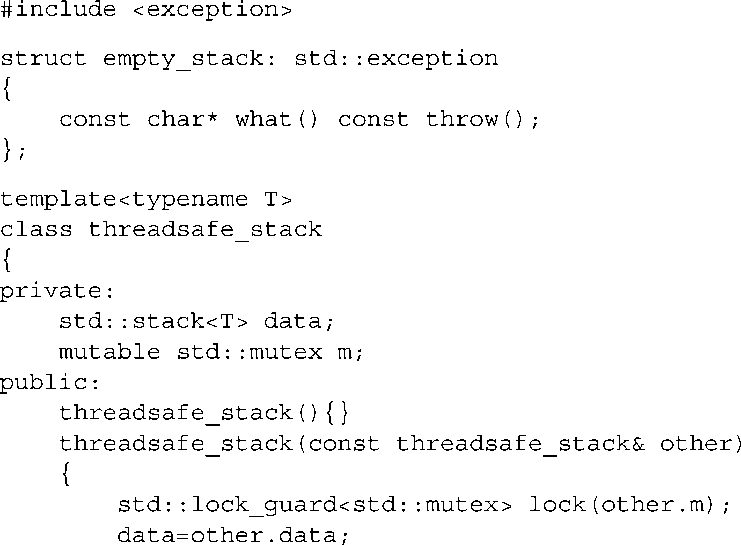
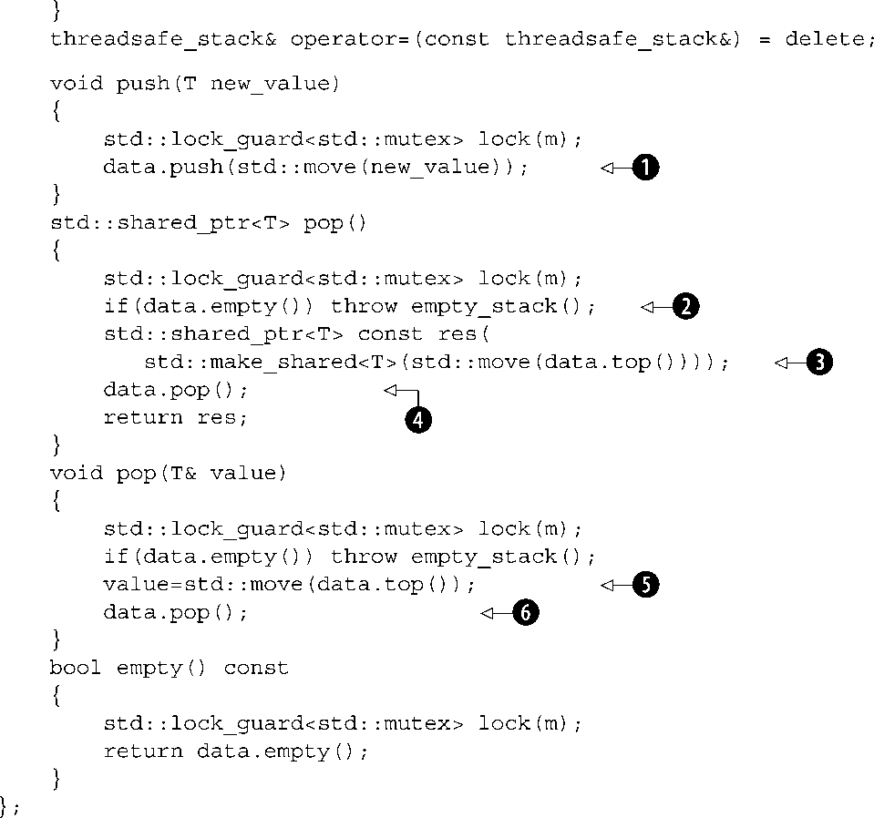
让我们轮流看看每个准则，以及它们是如何应用的。
首先，如你所见，基本的线程安全是通过使用互斥锁m
保护成员函数来实现的。这就确保了同一时间只有一个线程在存取数据，因此每个成员函数都保持了不变量，没有线程会看到一个破坏的不变量。
其次，empty()
和任何一个pop()
函数间都可能产生竞争条件，但是当pop()
持有锁的时候，这段代码会明确地检查它所包含的栈，因此竞争条件就不成问题了。调用pop()
时会直接返回出栈的数据项，就避免了类似于std::stack<>
中单独的成员函数top()
和pop()
间可能产生的竞争条件。
下一个，这里可能会抛出一些异常。锁住一个互斥元可能会抛出异常，这不仅是极其罕见的（因为这就表明互斥元有问题或者缺乏系统资源），也是每个成员函数的第一个操作。因为没有数据被修改，所以是安全的。解锁一个互斥元总是成功的，所以总是安全的，并且使用std::lock_guard<>
保证了在成员函数结束的时候互斥元不会被锁定。
调用data.push()
❶可能会抛出异常，如果复制或者移动数据项抛出异常或者不能分配足够的内存来扩展下层的数据结构。不管怎样，std::stack<>
保证了它是安全的，因此这也不是一个问题。
在函数pop()
重载的第一种形式中，它的代码可能会抛出一个empty_stack
异常❷，但是没有做任何修改，因此它是安全的。创建res
❸时因为一些原因可能会抛出异常：调用std::make_shared
可能会抛出异常，因为它无法为新对象和需要引用计数的内部数据分配内存。当复制构造函数或移动构造函数中返回的数据项被复制/移动到新分配的内存时也可能会抛出异常。在这两种情况下，C++运行库和标准库确保没有内存泄露并且新对象（如果存在的话）被正确销毁。因为你仍然
没有修改下层的栈，所以没有问题。作为结果的返回值，调用data.pop()
❹保证了不会抛出异常，因此pop()
的重载是异常安全的。
函数pop()
重载的第二种形式是类似的，只不过这次是拷贝赋值或移动赋值操作符抛出异常❺，而不是构造新对象和一个std::shared_ptr
实例抛出异常。同样，你实际上并没有修改数据结构直到调用data.pop()
❻，这仍然保证了不会抛出异常，因此这一重载也是异常安全的。
最后，empty()
不修改任何数据，因此是异常安全的。
这里会有产生死锁的可能，因为当持有锁时调用了用户代码：拷贝构造函数或移动构造函数❶、❸，以及内含数据项的拷贝赋值操作或移动赋值操作❺，以及可能由用户定义的new
操作符。如果当数据项被插入栈或从栈中移出时，这些函数调用了栈的成员函数，或者当栈成员函数被调用时，这些函数请求一个锁的时候保持着另一个锁，就有可能产生死锁。然而，要求栈的使用者做出如下保证是明智的：你不能理所当然地在没有复制数据项或为之分配内存的情况下，将它加入栈或者从栈中移走它。
因为所有的成员函数都使用std::lock_guard<>
来保护数据，所以多个线程调用stack
的成员函数是安全的。成员函数中只有构造函数和析构函数是不安全的，但是这不是一个特殊问题，对象只能被构造和销毁一次。在一个没有完全构造好的对象或部分析构对象上调用成员函数永远都不是一个好主意。因此，使用者必须保证在它被完全构造前别的线程不能存取栈，并且在它被完全销毁前，所有线程结束存取栈。
尽管对多线程来说，因为使用了锁，每次只有一个线程对栈数据结构进行操作，所以同时调用成员函数是安全的。但是当stack
上存在显著的竞争时，线程序列化
可能会限制应用的性能。当一个线程在等待锁的时候，它就做不了任何有用的工作。并且，栈没有为等待数据项被插入的线程提供任何方式的准备，因此如果一个线程需要等待，它就会反复地调用empty()
，或者只是调用pop()
，并且捕捉empty_stack
异常。如果这种情况发生的话，这种栈实现就成为一个比较糟糕的选择，因为一个等待中的线程要么消耗宝贵的资源在检查数据上，要么用户必须写外部的等待和通知代码（比如，使用条件变量），而这就有可能让内部锁变得无效并且造成浪费。第4章中的队列在数据结构中使用了条件变量，这就提供了一种数据结构中包含等待的方法。因此下面我们来看一看。
清单6.2中重现了第4章中提到的线程安全队列。类似于栈是以std::stack<>
建模的，队列是以std::queue<>
来建模的。此外，它的接口与标准容器适配器的接口是不同的，因为它要满足其数据结构对于来自多线程的并发访问是安全的这一约束。
清单6.2 使用条件变量的线程安全队列的完整类定义
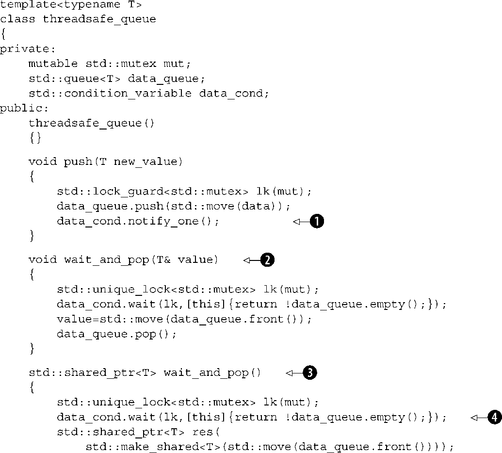
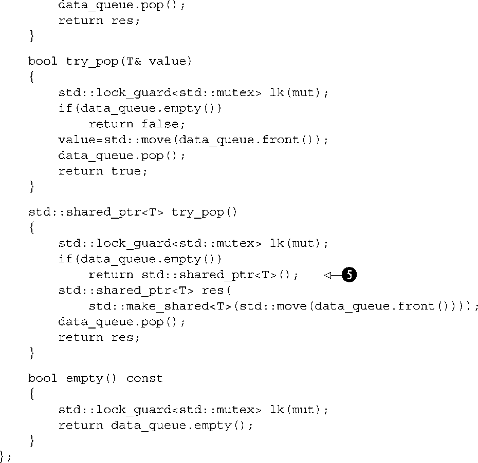
清单6.2中所示的队列实现的结构与清单6.1中所示的栈的结构是类似的，除了push()
❶中调用的data_cond.notify_one()
以及wait_and_pop()
函数❷、❸。try_pop()
的两种重载形式与清单6.1中的pop()
函数的两种重载形式基本上是相同的，区别在于当队列为空的时候，try_pop()
函数不引发异常。try_pop()
函数要么返回一个表明是否取回一个值的bool
值，要么在返回指针的重载❺没能取到值的时候返回NULL
，这也是实现栈的有效方式。因此，如果不包括wait_and_pop()
函数，为栈应用所做的分析同样适用此。
新的wait_and_pop()
函数是一种解决等待队列入口问题的方法，与反复调用empty()
函数不同，等待中的线程可以通过调用wait_and_pop()
函数，然后数据结构使用条件变量来处理这种等待状态。对data_cond.wait()
的调用直到下层队列中至少有一个元素时，才会返回，因此你不用担心在代码的这个地方队列为空的可能性，数据仍然被互斥元上的锁保护着。这些函数不会增加任何新的竞争条件和死锁的可能性，并且维持了不变量。
当一个元素进入队列时，如果不止一个线程处于等待状态，关于异常安全就会有点崎岖，只有一个线程会被data_cond.notify_one()
的调用唤醒。然而，如果被唤醒的线程在wait_and_pop()
中引发异常，例如构造std::shared_ptr<>
的时候❹，那么就没有线程将被唤醒。如果不能接受这一点，那么可以用data_cond.notify_all()
来代替data_cond.notify_one()
，前者将唤醒所有在等待的线程，代价就是当最后它们发现队列为空的时候，其中的大部分线程都要重新进入睡眠状态。第二种替代方法就是，当引发异常的时候，让wait_and_pop()
调用notify_one()
，这样另外一个线程可以尝试获取所存储的值。第三种替代方法，是将std::shared_ptr<>
的初始化移动到push()
调用，并且存储std::shared_ptr<>
实例而不是直接存储值。将内部的std::queue<>
复制到std::shared_ptr<>
并不会引发异常，因此wait_and_pop()
又是安全的了。清单6.3展示了使用这一思想重新修订以后的队列实现。
清单6.3 包含std::shared_ptr<>实例的线程安全队列
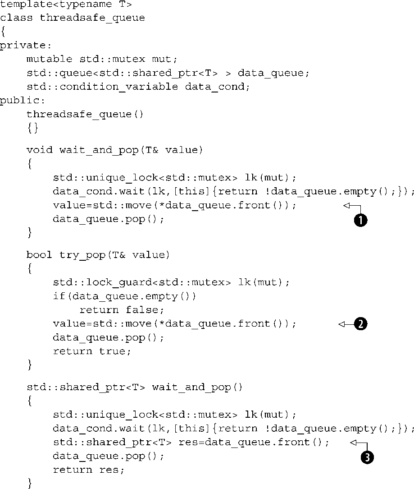
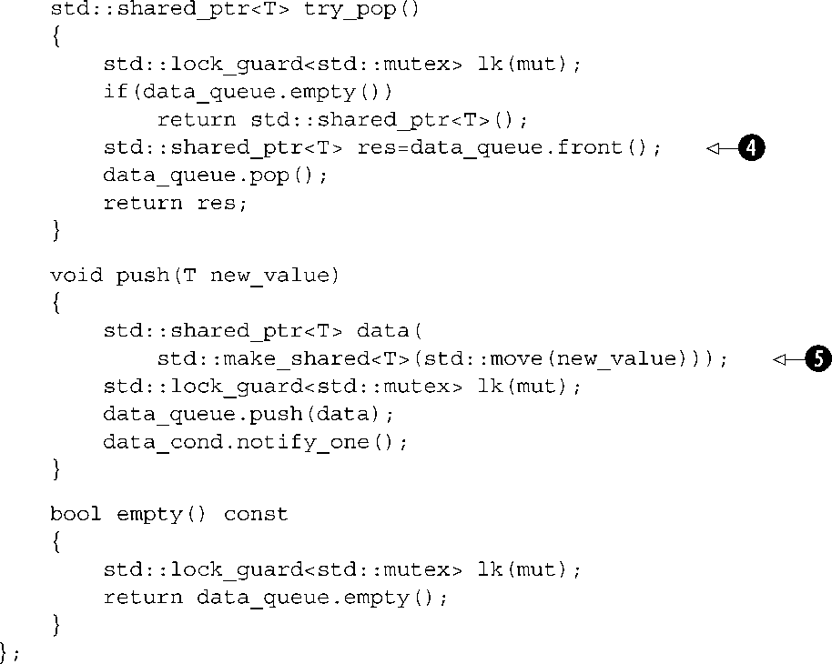
通过std::shared_ptr<>
持有数据的基本效果是直观的：接受一个对变量的引用来获取新值的pop函数，现在必须得解引用所存储的指针❶、❷，返回一个std::shared_ptr<>
实例的pop函数可以在返回调用前从队列中取得这个数❸、❹。
如果数据由std::shared_ptr<>
持有，那么有一个额外的好处：可以在push()
的锁外面完成此新实例的分配❺，然而在清单6.2中，就必须在pop()
持有锁的情况下才能这样做。因为内存分配通常是很昂贵的操作，这种方式就有助于提高队列的性能，因为它也减少了持有互斥元的时间，允许其他线程同时在队列上执行操作。
就像之前栈的例子一样，使用互斥元来保护整个数据结构限制了队列所支持的并发。尽管多个线程可能在不同的成员函数中被阻塞，但是一次只有一个线程可以进行操作。尽管如此，部分限制来自于在实现中使用std::queue<>
；通过使用标准容器，你基本上有了一个受到保护或者没受到保护的数据项。通过控制数据结构的详细实现，可以提供更细粒度的锁定，并且实现更高级别的并发。
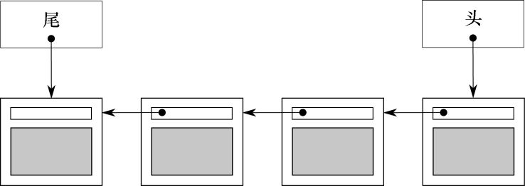
图6.1 用单链表表示的队列
在清单6.2和清单6.3中，有一个被保护的数据项（data_queue
）和一个互斥元。为了使用细粒度锁，你需要瞧一瞧队列的组成部分，并且将一个互斥元与每个不同的数据项联系起来。
实现队列最简单的数据结构为单链表，如图6.1所示。队列包含一个头（head） 指针，指向链表的第一项，并且每一项都指向下一项。将数据项从队列中移走时，首先将头指针指向下一个数据项，然后返回以前头指针所指向的数据项。
数据项被添加到队列的另一端。为了实现这一点，队列还包含一个尾（tail）
指针，指向链表的最后一项。通过将最后一项的next
指针指向新结点，然后将尾指针更新为指向新的一项，可以实现添加结点。当链表为空时，头指针和尾指针均为NULL
。
清单6.4展示了这种队列的简单实现，基于清单6.2中队列接口的缩减版本。因为此队列只支持单线程使用，因此只需要一个try_pop()
函数，而没有wait_and_pop()
。
清单6.4 一种简单的单线程队列实现
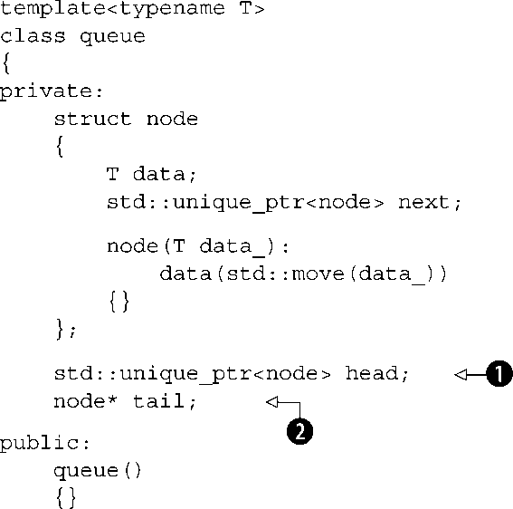
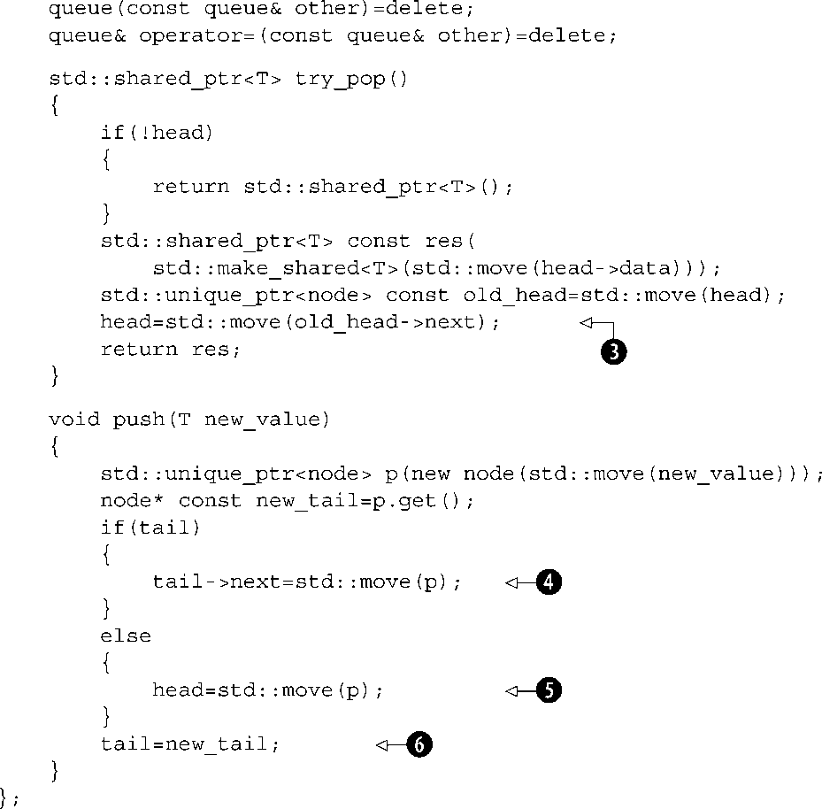
首先，要注意清单6.4使用了std::unique_ptr<node>
来管理结点，因为这可以保证当结点不再需要时，它们（以及它们指向的数据）能被删除，而无需显式地编写delete
。所有者链表从head
开始管理，指向最后一个结点的tail
是个裸指针。
尽管在单线程环境中这种实现方式可以良好地工作，但是如果在多线程环境下试图使用细粒度锁，就会带来问题。假定有两个数据项（head
❶和tail
❷），原则上可以使用两个互斥元，一个用来保护head
，另一个用来保护tail
，但是这样会存在一些问题。
最明显的问题就是，push()
可以修改head
❺和tail
❻，因此它就需要锁住这两个互斥元。虽然倒霉，但也不是什么大问题，因为锁住两个互斥元是可能的。关键的问题是，push()
和pop()
都要访问某个结点的next
指针。push()
更新tail->next
❹，try_pop()
读取head->next
❸。如果队列中只有一个结点，那么head==tail
，即head->next
和tail->next
是同一个的对象，因而需要保护。因为还没读取head
和tail
时，你无法分辨它们是否为同一个对象，你就必须在push()
和try_pop()
中锁定同一个互斥元，所以没有比以前做得更好。有没有办法摆脱这一困境呢？
可以通过预先分配一个不存储数据的傀儡结点，以保证了队列中总是至少会有一个结点，将在头尾的两个访问分开，来解决这个问题。对于一个空队列，head
和tail
都指向这个傀儡结点，而不是NULL
。这样就没问题了，因为如果当队列为空，try_pop()
不会访问head->next
。当你将一个结点加入队列（于是就有一个真正的结点），head
和tail
就指向不同的结点，因此在head->next
和tail->next
上就不存在竞争。缺点是，必须添加一个额外的间接层，通过指针存储数据，以便允许假结点。清单6.5展示该实现现在的样子。
清单6.5 使用傀儡结点的简单队列
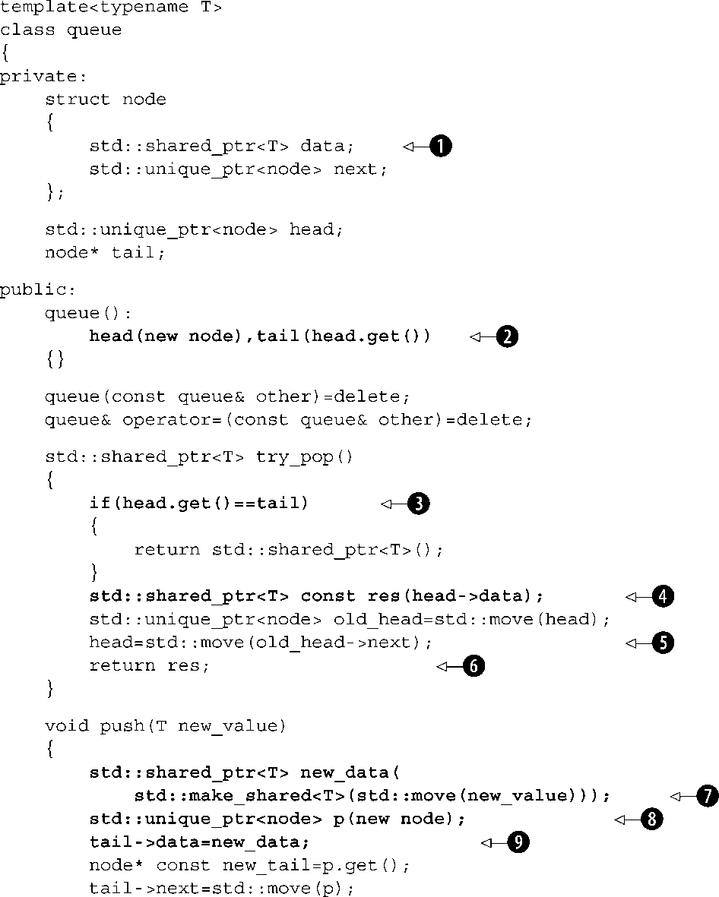
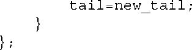
对try_pop()
的改变是很小的。首先，是比较head
与tail
❸，而不是检查其是否为NULL
，因为傀儡结点意味着head
不可能是NULL
。因为head
是一个std::unique_ptr<node>
，你需要调用head.get()
来进行比较。其次，因为node
现在是通过指针来存储数据的❶，所以可以直接获取指针❹而不必构造T
的一个新实例。最大改变是在push()
中，必须在堆上创建T
的一个新实例，并且在std::shared_ptr<>
❼中取得其所有权（使用std::make_shared
是为了避免第二次为引用计数分配内存的开销）。你创建的新结点将会作为新的傀儡结点，因此无需向构造函数提供new_value
❽。取而代之的是，将旧的傀儡结点上的数据设置为新分配的new_value
的副本❾。最后，为了得到一个傀儡结点，你必须在构造函数中创建它❷。
到目前为止，我敢肯定你想知道这些变化为你带来了什么，并如何让队列变得线程安全。好吧，push()
现在只访问tail
，不访问head
，这是一个改进。try_pop()
既访问head
又访问tail
，但只要在最初的比较中需要tail
，因此这个锁是很短暂的。最大的收获就是，傀儡结点意味着try_pop()
和push()
不会在同一个结点上进行操作，因此不再需要一个包含一切的互斥元。因此，你可以为head
和tail
各设置一个互斥元。那锁应该放在哪呢？
我们的目标是实现最大程度的并发，因此希望持有锁的时间尽可能的短。push()
比较简单：互斥元在访问tail
的全程都需要被锁定，这意味着应该在新节点被分配好之后❽以及为当前的尾结点分配数据之前❾，锁定互斥元。该锁定需要一直持有到函数结束。
try_pop()
就没那么简单了。首先，你需要锁定head
上的互斥元，并持有它直到head
使用完毕。本质上，正是这个互斥元决定了哪个线程进行pop
操作。一旦head
改变❺，你就可以解锁该互斥元；在返回结果的时候❻，无需锁定它。剩下对tail
的访问，需要锁定尾互斥元。因为只需要访问tail
一次，所以可以只在进行读取的时候获取该互斥元。最好在将其封装在函数内部来实现。实际上，因为需要锁定head
互斥元的代码只是该成员的子集，所以将其封装在函数里会更清晰。最终的代码如清单6.6所示。
清单6.6 使用细粒度锁的线程安全队列
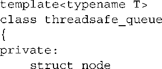
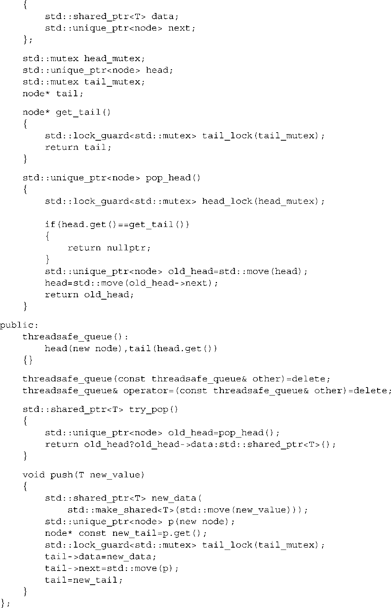
让我们用批判的眼光来分析这段代码，思考6.1.1节中列出的准则。在寻找被破坏的不变量前，你应该确定它们到底是什么。
tail->next==nullptr
。tail->data==nullptr
。head==tail
表明这是一个空链表。
head->next==tail
。x
，当x!=tail
时，x->data
指向T
的一个实例，并且x->next
指向链表中的下一个结点。x->next==tail
表明x
是链表中的最后一个结点。
head
开始，沿着next
结点会最终迭代到tail
。
就其本身而言，push()
是直观的：对数据结构所做的唯一更改受到tail_mutex
的保护，并且它们维持了不变量，因为新的尾结点是一个空结点，并且data
和next
已经正确设置给旧的尾结点了，而旧的尾结点成为了链表中最后一个真正的结点。
try_pop()
这一部分很有趣。结果证明了不仅tail_mutex
上的锁对于保护tail
本身的读取是必要的，而且确保从头结点读取数据不会产生数据竞争也是很必要的。如果没有这个互斥元，就有可能出现一个线程调用try_pop()
的同时，另一个线程调用push()
，而且它们的操作并没有确定的顺序。尽管每个成员函数在互斥元上都持有一个锁，但它们锁定的是不同的
互斥元，并且可能访问相同的数据。毕竟，队列中的所有数据都起源于对push()
的调用。因为线程都可能会访问同一个数据而没有确定的顺序，就有可能导致数据竞争和未定义的行为，正如你在第5章中看到的那样。幸亏在get_tail()
中对tail_mutex
的锁定解决了一切问题。因为调用get_tail()
与调用push()
锁定了相同的互斥元，在这两次调用之间就有了确定的顺序。要么调用get_tail()
发生在调用push()
之前，这种情况下get_tail()
看到的是tail
的旧值。要么调用get_tail()
发生在调用push()
之后，这种情况下get_tail()
看到的是tail
的新值，并且新的数据附在了
tail
之前的值上
。
在锁定head_mutex
的情况下调用get_tail()
也是很重要的。如果不这么做，对pop_head()
的调用可能会被阻塞在调用get_tail()
和锁定head_mutex
之间，因为可能有别的线程调用try_pop()
（接下来就是pop_head()
），并且先获得了锁，从而阻止刚开始的线程继续执行下去。
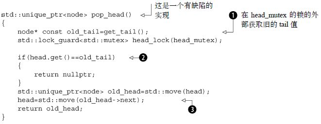
在这种损坏
的情况下，对get_tail()
的调用❶是在锁的范围之外做出的，你可能会发现在你的初始线程能够获取head_mutex
上的锁的时候，head
和tail
都已经发生了变化，并且不仅返回的尾结点不仅仅不再是尾部，甚至都不再是链表的一部分了。这有可能意味着即使head
真的是最后一个结点，head
和old_tail
的比较❷也会失败。因此，当更新head
❸的时候，你可能将head
移动到tail
之前，超过链表的结尾，破坏数据结构。在清单6.6的正确实现中，始终保持在head_mutex()
上的锁的范围内调用get_tail()
。这就确保没有别的线程可以改变head
，并且tail
只会移得更远（随着调用push()
加入新的结点），因此是百分百安全的。head
永远都不会越过get_tail()
返回的值，因而保持了不变量。
一旦pop_head()
通过更新head
，将结点从队列中删除，互斥元就解锁了，并且try_pop()
就可以提取数据并在有结点的时候将其删除（如果没有，就返回一个std::shared_ptr<>
的NULL
实例），按理说它就是能够访问该结点的唯一线程。
接下来，外部接口是清单6.2中的程序的一个子集，因此同样可以分析得到：接口中不存在固有的竞争条件。
异常就更有趣了。因为改变了数据分配模式，因此很多地方都可能产生异常。try_pop()
的操作中只有锁定互斥元才能引发异常，并且直到它获取锁之后才会修改数据。因此try_pop()
是异常安全的。另一方面，push()
在堆上分配一个T
的实例以及一个新的结点实例，而这两者都可能会引发异常。不管怎样，这两个新分配的对象都赋值给智能指针，因此当引发异常时它们就会被释放。一旦获取了锁，push()
中的其他操作都不会引发异常，所以你再次稳操胜券，push()
也是异常安全的。
因为没有改变接口，所以没有新的死锁的外部机会。同样也没有内部机会，只有在pop_head()
中才会获取两个锁，它总是先获取head_mutex
，然后再获取tail_mutex
，所以也不会死锁。
剩下的问题就是关于并发的实际可能性。这种数据结构实际上具有比清单6.2中数据结构相当多的并发范围，因为这些锁是更细粒度的，并且在锁外部完成的更多
。例如，在push()
中，分配新结点和新数据项的是无需持有锁的。这就意味着多个线程可以并发地分配新节点和新数据项而不会出现问题。每次只有一个线程可以在链表中插入新结点，并且此操作仅仅是通过一些简单的指针赋值来实现的，所以与所有内存分配操作都在std::queue<>
内部的、基于std::queue<>
的实现相比，它持有锁的时间根本就不算多。
同样，try_pop()
持有tail_mutex
的时间也很短，以保护tail
的读取。因此，几乎整个对try_pop()
的调用可以与push()
的调用同时发生。同样，当持有head_mutex
的时候所执行的操作是很少的，昂贵的delete
操作（在结点指针的析构函数中）在锁的外面。这就增加了同时发生的调用try_pop()
的数量。一次只有一个结点可以调用pop_head()
，但是多个线程可以删除旧结点并且安全地返回数据。
清单6.6提供了一个使用细粒度锁的线程安全队列，但它只支持try_pop()
（并且只有一种重载）。前面清单6.2中的有用的wait_and_pop()
函数呢？能否用细粒度锁实现相同的接口呢？
当然，回答是肯定的，但真正的问题是，怎么做？修改push()
是很简单的，只需要在函数的尾部添加data_cond.notify_one()
调用即可，就如同在清单6.2中一样。实际上，这并非那么简单，使用细粒度锁是为了实现并发量的最大化。如果在对notify_one()
的调用中保留互斥元被锁定（如同清单6.2），那么如果被通知的线程在互斥元解锁之前被唤醒，它就得等待互斥元。另一方面，假设在调用notify_one()
之前
就解锁互斥元，那么当等待中的线程被唤醒时，此互斥元就可以被它使用（假设没有别的线程先锁定它）。这是一个小小的改进，但某些情况下可能是很重要的。
wait_and_pop()
更复杂一些，因为得决定在哪里等待，断言是什么，以及需要锁定哪个互斥元。你所等待的条件是“队列非空”，它是用head!=tail
表示的。如上所示，这有可能要求head_mutex
和tail_mutex
都被锁定，但是在清单6.6中，你已经决定只需要在读取tail
的时候锁住tail_mutex
，比较本身是不需要的，因此可以将相同的逻辑应用到此处。如果将断言设定为head!=get_tail()
，就只需要持有head_mutex
，因此在调用data_cond.wait()
时可以使用head_mutex
上的锁。一旦增加了等待逻辑，这种实现就跟try_pop()
一样了。
try_pop()
的第二个重载以及相对应的wait_and_pop()
重载就需要仔细思考一下。如果只是将从old_head
获取到的std::shared_ptr<>
替换为向value
参数拷贝赋值，就可能存在异常安全问题。此刻，数据项已经从队列中删除，且互斥元已解锁，剩下的就是向调用者返回数据。然而，如果拷贝赋值引发异常（这是很有可能发生的），数据项就会丢失，因为无法将其返回到队列中同样的位置。
如果模板参数中使用的实际类型T
具有不引发异常的移动赋值运算符，或是不引发异常的交换操作，就可以使用之，但是我们实际上更想要一个适用于所有类型T
的通用解决方案。在这种情况下，就需要在结点从链表中删除前，将可能的异常引发移到锁的范围内。这就意味着，需要另外的pop_head()
重载，在修改链表之前获取存储的值。
相比之下，empty()
就很平常了，只需要锁定head_mutex
并检查head==get_tail()
（如清单6.10所示）。队列最终的代码如清单6.7、清单6.8、清单6.9和清单6.10所示。
清单6.7 使用锁和等待的线程安全队列：内部与接口
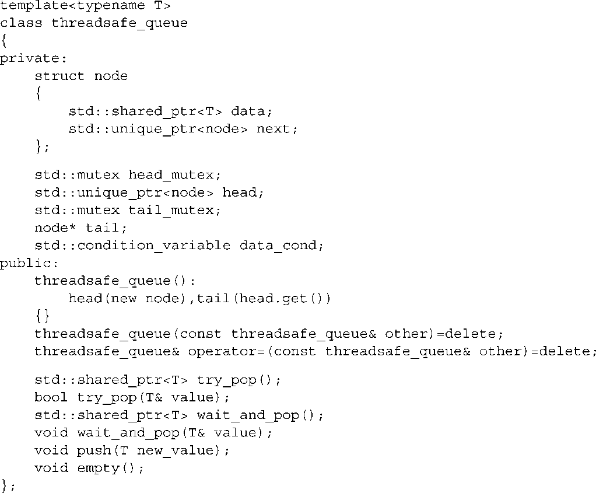
向队列中入队新结点是很直观的——其实现（如清单6.8所示）与之前展示的非常接近。
清单6.8 使用锁和等待的线程安全队列：push新值
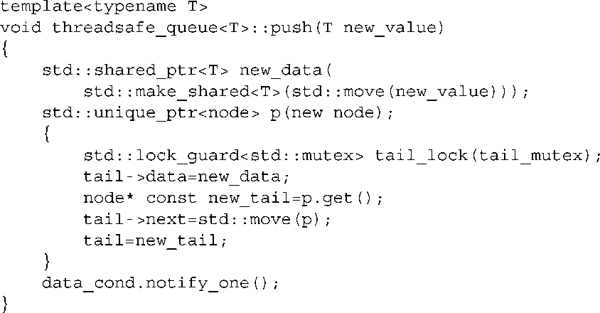
就像一直提到的那样，复杂性都在pop
端，要利用一系列的辅助函数来简化问题。清单6.9展示了wait_and_pop()
是如何实现的以及相关的辅助函数。
清单6.9 使用锁和等待的线程安全队列：wait_and_pop()
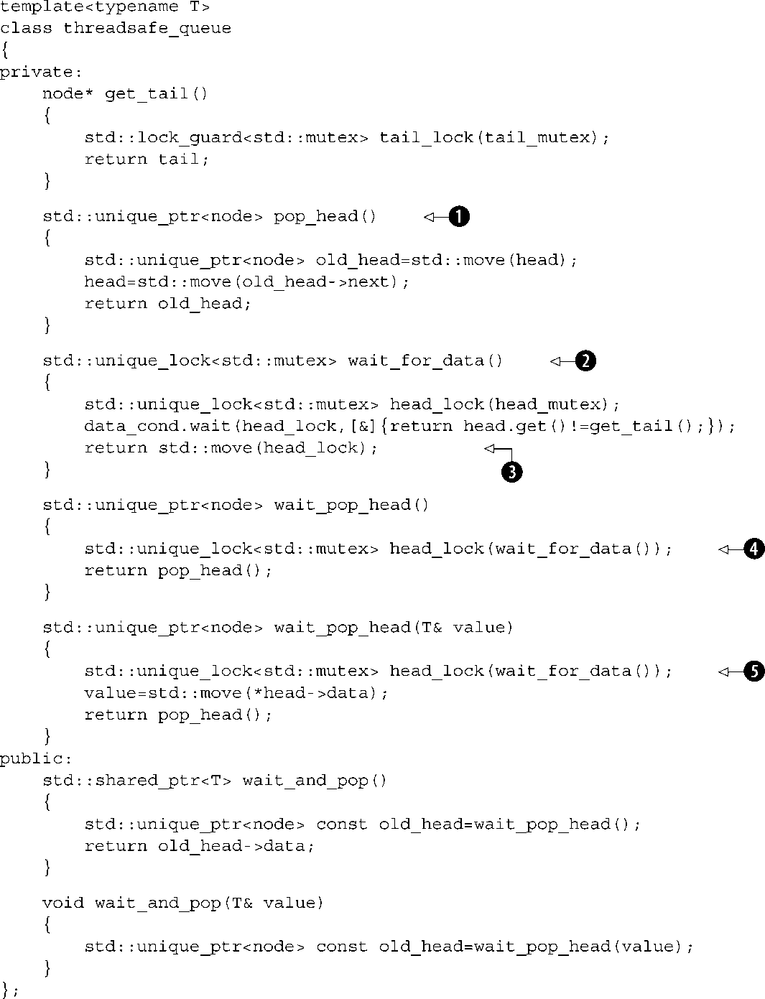
清单6.9所示的pop
端实现具有一些辅助函数来简化代码和去重，例如pop_head()
❶与wait_for_data()
❷。相对应地，它们修改链表以删除首项，并且等待队列中有数据要pop。wait_for_data()
特别值得一提，因为它不仅使用一个lambda函数作为断言来等待条件变量，而且它向调用者返回锁的实例❸。这是为了确保当数据被相关的wait_pop_head()
重载❹、❺修改时，持有相同的锁。在清单6.10中列出的try_pop()
代码中也复用了pop_head()
。
清单6.10 使用锁和等待的线程安全队列：try_pop()和empty()
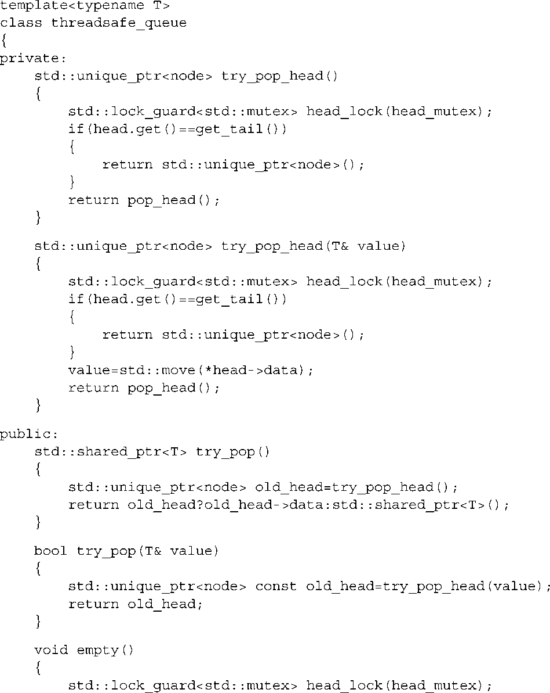
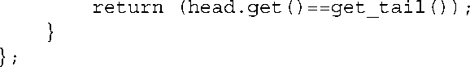
这种队列的实现将会作为第7章中提到的无锁队列的基础。这是一个无界 队列。只要还有可用的内存，即使没有值被删除，线程也可以一直往队列中push新的值。与无界队列相对的是有界 队列，当队列被创建的时候，它的最大长度也已经定下来了。一旦一个有界队列已满，再试图往队列中push更多的元素就会失败或者阻塞，直到有元素从队列中pop出，以腾出空间。有界队列对那些基于待执行的任务在线程间划分工作，要确保均匀铺开工作的时候，是很有用的（参见第8章）。这可以阻止线程过快填充队列，以至于远远超过从队列中读取数据的线程。
这里展示的无界队列的实现可以通过在push()
中等待条件变量，很容易地扩展为限制长度的队列。不同于等待队列中有数据项（例如在pop()
中所做的），你需要等待队列中的项目数量低于最大值。对有界队列的进一步讨论超出了本书的范围。现在，让我们越过队列，来看一看更复杂的数据结构。
栈和队列是很简单的，它们的接口极其有限，并且紧紧关注特定的目的。并非所有的数据结构都是那么简单的，大部分数据结构支持各种操作。原则上，这可能导致更多的并发机会，但因为需要考虑多种访问模式，使得保护数据的任务变得更加困难。当为并发访问设计数据结构时，能够执行的各种操作的精确特性是很重要的。
为了研究所涉及到的问题，我们先来看看查找表的设计。
查找表或字典将一种类型（键类型）的值与另外一种相同或不同类型（映射类型）的值联系起来。一般来说，这种数据结构的目的是使代码可以用一个给定的键值来查询相关的数据。在C++标准库中，是通过使用关联容器来实现这种功能的，例如，std::map<>
、std::multimap<>
、std::unorderedmap<>
以及std::unordered multimap<>
。
查找表的使用模式与栈和队列都不同。栈和队列上的每个操作都会在一定程度上对它有所修改，要么添加一个元素要么删除一个元素，而查找表则很少会被修改。清单3.13中的简单DNS缓存就是这种情形的一个例子，与std::map<>
相比，它的接口极大地简化了。如你在栈和队列中看到的，当从多个线程并发访问数据结构时，标准容器的接口并不合适，因为在接口设计中存在固有的竞争条件，所以它们需要被削减并修订。
从并发的角度来说，std::map<>
接口的最大问题就是迭代器。尽管当别的线程访问（以及修改）容器时，拥有一个能够安全访问容器的迭代器也是有可能的，但这很棘手。正确把握迭代器要求你去处理以下的问题，例如另一个线程正在删除迭代器引用的元素，这很麻烦。作为线程安全查找表要砍掉的第一个接口，你应跳过迭代器。std::map<>
（以及标准库中其他的关联容器）的接口在很大程度上基于迭代器，所以将它们踢到一边并且重新开始设计接口可能是值得的。
查找表只有一些的基本操作。
还有一些容器范围的操作也是有用的，例如检查容器是否为空，键的完整列表的快照，或是键/值对的完整集合的快照。
如果坚持简单的线程安全准则，例如不返回引用，以及在每个成员函数上都有一个互斥元，那么这些操作都是安全的。它们要么出现在其他线程的某个修改之前，要么在之后。最有可能产生竞争条件的，是在添加一个新的键/值对的时候。如果两个线程添加一个新值，只有一个线程会胜出，第二个会因此而失败。一种可能的方法将添加和改变操作整合进单个成员函数中，就像你为清单3.13中的DNS缓存所做的那样。
从接口的角度来看，有趣一点是获取相关联值时的“如果有 ”的部分。一种选择是当键不存在的情况下，允许用户提供一个“默认的”结果来返回。
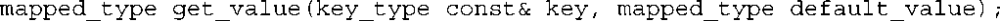
在这种情况下，如果没有显式提供default_value
，可以使用mapped_type
的默认构造函数实例。这也可以扩展为返回一个std::pair<mapped_type,bool>
类型的实例，而不只是mapped_type
的实例，这里的bool
指示值是否存在。另一种选择就是，返回一个引用该值的智能指针。如果指针的值为NULL
，就是没有返回值。
如上所述，一旦决定了接口，那么（假设没有接口竞争条件）可以通过在每个成员函数中使用一个互斥元和一个简单锁来保护下层的数据结构，以保证线程安全。然而，这会浪费通过独立的函数来读取数据结构并修改它所提供的并发可能性。一种方法是使用一个支持多个读线程或者一个写线程的互斥元，例如清单3.13中使用的boost::shared_mutex
。尽管这种方法可以提高并发访问的可能性，但是每次只有一个线程能够修改数据结构。理想情况下，你会想要做得更好一些。
如同在6.2.3中提到的队列一样，为了允许细粒度锁，你需要仔细考虑数据结构的细节，而不是仅仅封装一个类似于std::map<>
这样已存在容器。这里通常有三种常见的方法来实现一个类似于查找表的关联容器。
二叉树不能为扩大并发机会提供太多的空间，每次查找或修改必须从访问根节点开始，因此根节点必须被锁定。尽管当线程沿着树往下移动的时候会释放这个锁，但是这也不比锁定整个数据结构好多少。
已排序数组就更糟了，因为无法事先得知一个给定的数据在数组的哪个位置，所以就需要一次锁定整个数组。
只剩下哈希表了。假设有一定数量的桶，一个键属于哪个桶完全取决于这个键及其哈希函数的特性。这就意味着可以安全地在每个桶上有一个独立的锁。如果再次使用支持多重读或单一写的互斥元，你就将并发机会增加了N重，这里的N是桶的数量。其缺点是为键找一个好的哈希函数。C++标准库提供了std::hash<>
模板，可以用来实现这一目的。它已经为int
等基本类型以及std::string
这样的常见库类型进行了特化，而且使用者也可以轻易地为别的键类型将其进行特化。如果效仿标准的无序容器，以及在进行哈希计算时将函数对象类型作为模板参数，那么使用者可以选择是否为键类型特化std::hash<>
，或是提供一个单独的哈希函数。
那么，让我们来看清单6.11中的代码。一个线程安全查找表的实现将会是怎样的呢？这里列出了一种可能的实现。
清单6.11 线程安全查找表
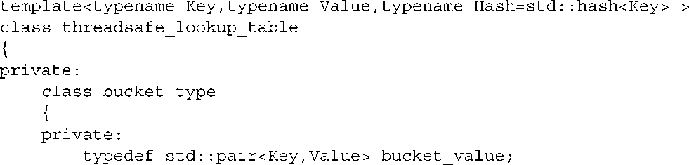
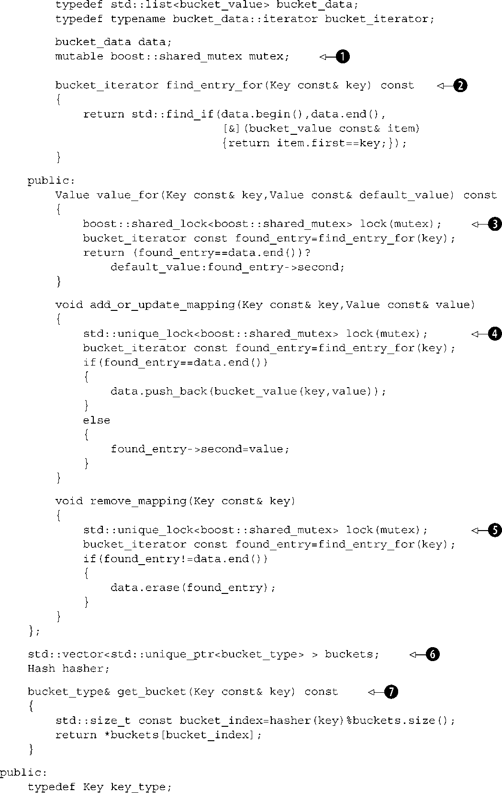
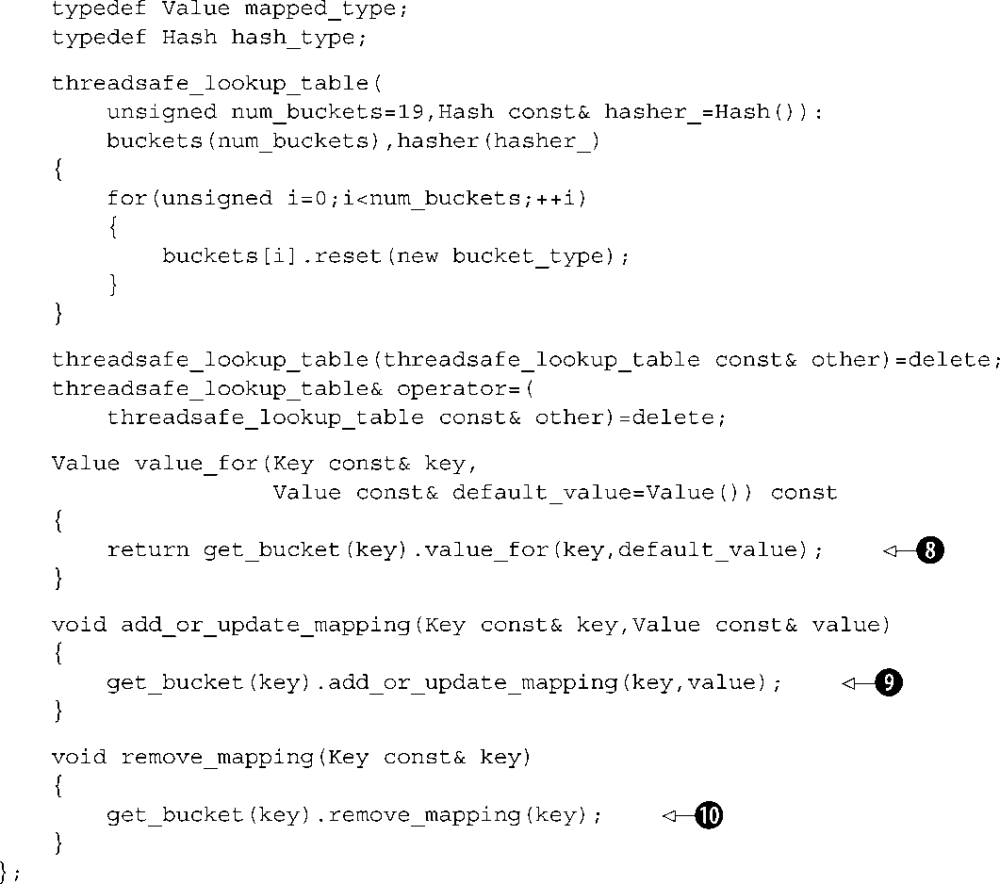
该实现使用std::vector<std::unique_ptr<bucket_type>>
❻来持有桶，允许在构造函数中指定桶的数量。默认值是19，这是一个任意选择的质数。哈希表与质数数量的桶合作得最好。每个桶都被一个boost::shared_mutex
的实例保护❶，使得每个桶
都可以允许很多个并发读或者单个调用其中一个修改函数。
因为桶的数量是固定的，所以在调用get_bucket()
函数❼时无需锁定❽、❾、❿，而且桶互斥元随后可以被锁定为共享（只读）所有权❸，或是独占（读/写）所有权❹、❺，对每个函数都是适用的。
这三个函数都使用桶上的find_entry_for()
成员函数❷来确定在桶上是否有入口。每个桶包含一个键/值对的std::list<>
，因此添加和删除项目是很简单的。
我还关注了并发的角度，所有的东西都被互斥元锁合适地保护着，那么异常安全呢？value_for
并不修改任何东西，所以没关系；如果它引发异常，也不会影响数据结构。remove_mapping
调用erase
的时候会修改列表，但是保证不会引发异常，因此是安全的。只有add_or_update_mappin
g在if
的两个分支上可能会引发异常。push_back
是异常安全的，当它引发异常时，会将列表留在原始状态，因此这个分支是没问题的。在这种情况下，唯一的问题就是当替换一个现存值时所做的赋值，如果此赋值引发异常，那么就得指望它不要修改原始值。然而，这在整体上并不影响数据结构，而且完全是用户提供类型的属性，因此可以安全地把它留给用户来处理。
在本节的开头，我提到这种查找表的一个不错的功能，就是可以获取到当前状态的快照的选项，比如std::map<>
。为了确保能够得到该状态的一致的副本，就需要锁定整个容器，也就是需要锁定所有的桶。因为查找表中“普通的”操作一次只需要锁定一个桶，这就会是唯一一个需要锁定所有桶的操作。因此，只要每次按照相同的顺序（例如，递增桶的索引）来锁定桶，就不会有死锁的机会。清单6.12给出了一个实现。
清单6.12 获取threadsafe_lookup_table的内容作为一个std::map<>
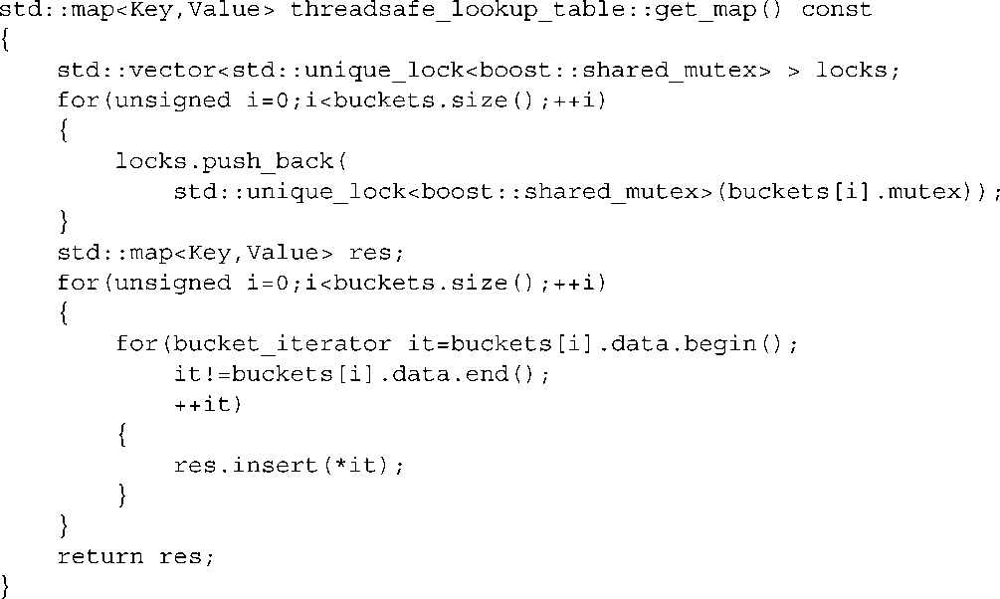
清单6.11中查找表实现通过单独锁定每个桶以及使用一个boost::shared_mutex
实例来允许基于每个桶的并发读取，这就从总体上增加了查找表的并发机会。但是如果要通过更细粒度的锁来增加并发的潜力呢？在下一节，将通过使用具有迭代器支持的线程安全链表容器来实现。
链表是一种最基本的数据结构，因此它应该能被直接写成线程安全的，不是吗？那么，这取决于你追求什么样的功能，并且需要提供迭代器支持，这是我一直避免将其加入到你的基础图中的东西，因为它太复杂了。STL风格的迭代器支持，指的是迭代器必须持有某种对容器内部数据结构的引用。如果容器可以被另一个线程修改，这个引用必须仍然有效，这就从根本上要求迭代器在部分数据结构上持有锁。考虑到STL风格的迭代器的生存期是完全不受容器控制的，这就不是个好主意。
另一种方式是提供类似于for_each
这样的迭代函数作为容器本身的一部分。这就让容器完全负责迭代器和锁，但是这与第3章中提到的避免死锁原则是冲突的。为了使得for_each
做一些有用的操作，它就必须在持有内部锁的时候调用用户提供的代码。不仅如此，为了使用户提供的代码能够作用于数据项，它必须将对每个数据项的引用传递给用户提供的代码。你可以通过向用户提供的代码传递每个数据项的副本来避免这一点，但是当数据项很大时，这种方式就很耗费资源。
因此，目前我们把它留给用户，让他们确保不会在用户提供的操作中因获取锁而导致死锁，并且通过在锁外的访问中存储引用以避免导致数据竞争。就查找表所使用的链表来说，它是完全安全的，因为不会做任何不恰当的操作。
留给你的问题是，要为链表提供哪些操作。如果回顾一下清单6.11以及6.12，就可以知道需要下列操作。
为了令其成为良好的通用链表容器，添加进一步的操作例如在指定位置插入是很有用的，但是对于查找表是不需要的，因此我将它留给读者作为练习。
在链表中使用细粒度锁的基本思想是每个结点使用一个互斥元。如果链表很大，就会有很多互斥元！其好处就是在链表不同部分的操作是真正并发的。每个操作仅在其真正关注的结点上持有锁，并且当它移动到下一个结点时，会解锁每个结点。清单6.13给出了正是这样一个链表的实现。
清单6.13 支持迭代的线程安全链表
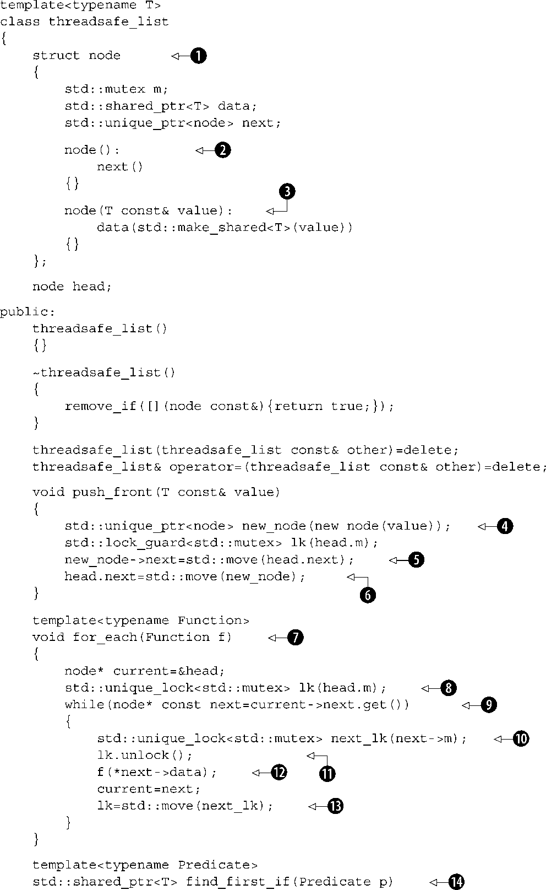
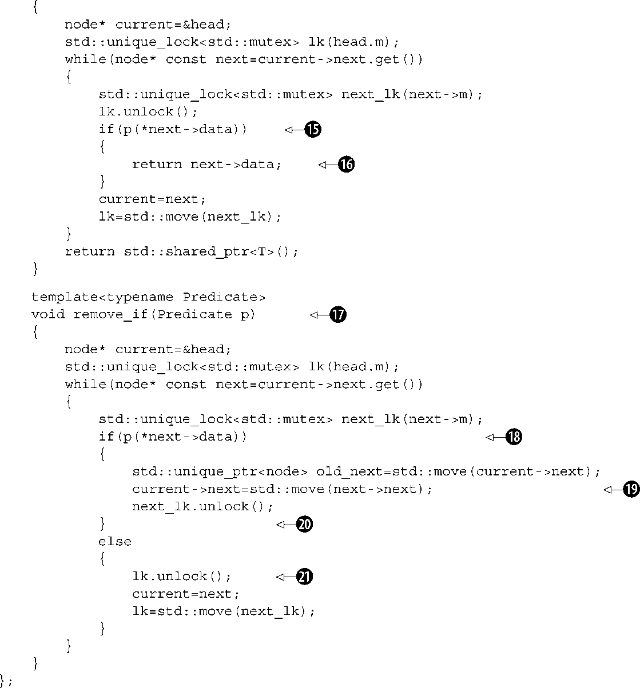
清单6.13中的threadsafe_list<>
是一个单链表，每个入口是一个node
结构体➊。默认构造的node
是链表的head
，开始时它的next
指针为NULL
➋。新结点是通过push_front()
函数增加的，首先构造一个新结点➍，在堆上分配存储的数据➌，保留next
指针为NULL
。然后你需要为head
结点获取互斥元上的锁来得到正确的next
值➎，并且通过将head.next
设置为指向新结点来实现将这个结点插入链表前方➏。到目前为止，一切都还不错，你只需要锁住一个互斥元来将新项目插入链表，因此没有死锁的风险。同样，缓慢的内存分配发生在锁之外，因此锁只保护几个指针值的更新并且不会失败。下面是迭代函数。
首先，我们来看看for_each()
➐。这个操作用接受某种类型的Function
，作用于表中的每一个元素；通常在大多数标准库中，它会通过值形式接受此函数，并且可以与真正的函数或者是具有函数调用操作符的某种类型的对象一起运作。在这种情况下，函数必须接受类型为T
的值作为唯一的参数。这就是你进行交替锁定的地方。刚开始，你锁定head
结点上的互斥元➑。然后就可以安全地获得指向next
结点的指针（使用get()
因为你并不打算获取该指针的所有权）。如果该指针不为NULL
➒，就锁定那个结点上的互斥元➓来处理数据。一旦你锁定那个结点，就可以释放之前结点的锁⓫，并且调用指定的函数⓬。一旦函数完成，就可以更新current
指针指向你刚刚处理的结点，并且将锁的拥有权从next_lk
移动（move
）到lk
⓭。因为for_each
将每个数据项直接传递给所提供的Function
，如果需要的话，你可以使用它更新数据项或者将它们复制到另一个容器中，或其他任何事情。如果函数表现良好这就是安全的，因为拥有数据项的结点在整个调用中都持有互斥元。
find_first_if()
⓮与for_each()
是类似的，最主要的不同之处在于提供的Predicate
必须返回true
来表明找到了匹配项或者false
来表明没找到匹配项⓯。一旦你找到匹配项，你就返回找到的数据⓰而不是继续查找。你可以用for_each()
来实现它，但是一旦找到匹配项就不需要继续处理链表中剩下的部分了。
remove_if()
⓱有些不同，因为这个函数必须真正地更新链表，你不能用for_each()
来实现它。如果Predicate
返回true
⓲，你就通过更新current->next
⓳将这个结点从链表中删除。一旦完成，就可以释放next
结点互斥元所持有的锁。当你将它移入的std::unique_ptr<node>
超出范围时，该结点就被删除了⓴。在这种情况下，你不用更新current
，因为需要检查新的next
结点。如果Predicate
返回false
，你就像以前一样处理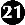
。
那么，这些互斥元上存在着死锁或者竞争条件么？答案毫无疑问是否定
的，前提是所提供的断言和函数是表现良好的。迭代总是按照同一方式，通常从head
结点开始，并且总是在释放当前互斥元前就锁住下一个互斥元，因此不可能在不同的线程间有不同的锁顺序。唯一可能产生竞争条件的，就是在remove_if()
中对待删除结点的删除，因为你会在解锁互斥元之后才这么做（销毁一个锁定的互斥元是未定义的行为）。然而，稍加思考就会知道这确实是安全的，因为你仍然持有之前结点（current
）上的互斥元，因此没有新线程可以试图获取你要删除的结点上的锁。
并发的机会又如何呢？这种细粒度锁的关键是在单个互斥元上提高并发的可能性，那么实现这一点了么？是的，已经实现了。不同的线程可以同时在链表的不同结点上工作，无论它们正在用for_each()
处理每个数据项，还用find_first_if()
搜索，还是用remove_if()
来删除项目⓴。但是因为每个结点的互斥元轮流被锁定，线程不能互相超越。如果一个线程花了很长时间处理一个特定的结点，当别的线程到达此特定结点时就必须等待。
本章开头考虑了为并发设计一个数据结构意味着什么，并且提供了一些准则来实现。然后我们完成一些通用的数据结构（栈、队列、哈希映射以及链表），考虑了如何在设计并发存取的时候应用这些准则来实现它们，使用锁来保护数据并阻止数据竞争。现在你可以考虑设计你自己的数据结构，观察哪里有并发的机会以及哪里可能会存在竞争条件。
在第7章，我们将看一看完全避免锁的方法，使用底层原子操作来提供必要的顺序限制，并且遵循同样的准则。